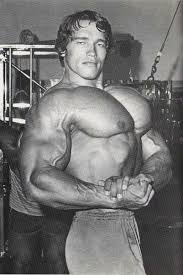

Este é o treino de Cleiton, O Cleiton tem a raça necessária para treinar, não importa o quanto seja difícil, ele vai até o limite, até arrancar sangue se necessário.
Treino de Perna
Hack Machine: 5 séries de 12 repetições
Panturrilha: 7 séries de 15 repetições
Mesa Flexora: 5 séries de 12 repetições
Levantamento Terra: 10 séries de 3 repetições
Cadeira Flexora: 7 séries de 15 repetições
Treino Peito e Triceps
Supino Inclinado: 5 séries de 12 repetições
Supino Reto: 5 séries de 10 repetições
Voador: 6 séries de 12 repetições
Triceps Testa (Polia): 6 séries de 12 repetições
Triceps Francês (Polia): 6 séries de 12 repetições
Triceps Polia: 6 séries de 12 repetições

Treino de Costas e Biceps
Puxado Neutra (Alta): 6 séries de 15 repetições
Puxado Supinada: 5 séries de 12 repetições
Puxado Triângulo Alto: 5 séries de 10 repetições
Puxado Triângulo Baixo: 5 séries de 10 repetições
Remada Unilateral (Halteres): 4 séries de 12 repetições
Rosca Martelo: 6 séries de 12 repetições
Rosca Banco(45°): 5 séries de 10 a 12 repetições
Rosca Scott: 5 séries de 10 a 12 repetições
Ombro
Elevação Lateral: 5 séries de 10 a 12 repetições
Elevação Frontal: 5 séries de 10 a 12 repetições
Desenvolvimento No Banco(Halteres): 5 séries de 10 a 12 repetições